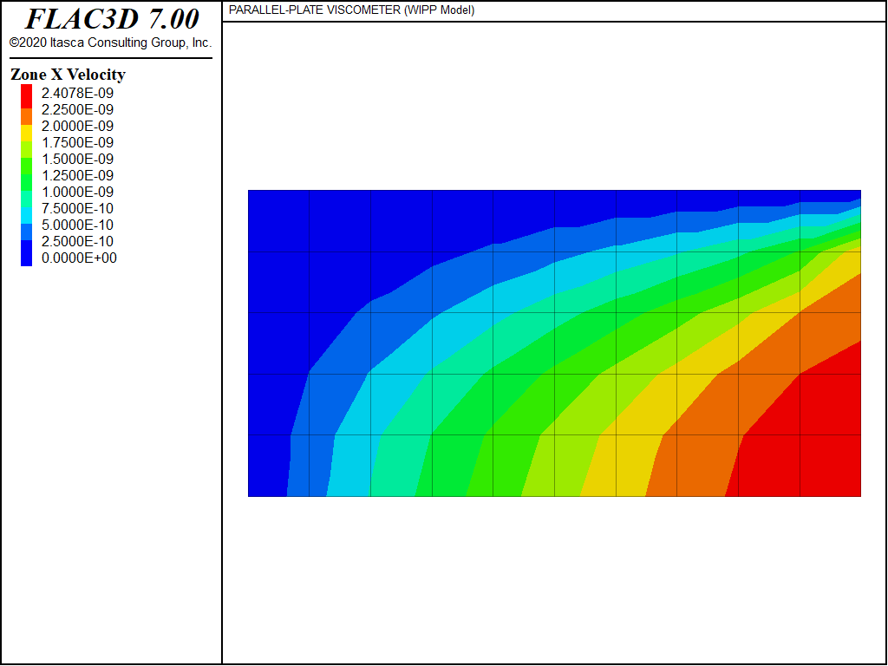
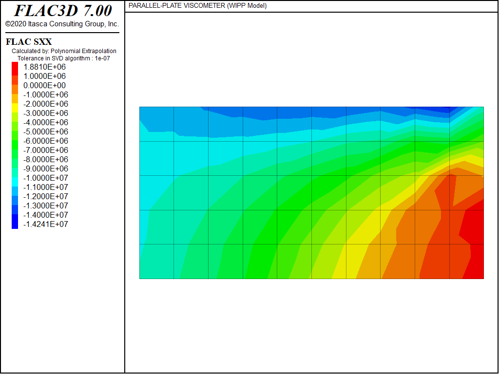

WIPP 型模型：平行板黏度计
注意
要在 FLAC3D 中查看此项目，请使用菜单命令 。 选择“Creep/ ParallelPlateViscometerWIPP”并选择“ParallelPlateViscometerWIPP.f3dprj”以加载。 该项目的主数据文件见本示例末尾（main data files）。
重复进行采用经典蠕变模型的平行板黏度计试验（parallel-plate viscometer test using the classical creep models），以检验 WIPP 型蠕变模型（WIPP 模型（WIPP model）、WIPP-Drucker 模型（WIPP-Drucker model） 和 WIPP-Salt 模型（WIPP-Salt model））。 平行板试验的解析解假定黏度为常数。在 WIPP 型 蠕变模型中，黏度取决于偏应力，因此无法直接比较。 作为替代，将 FLAC3D 解与二维程序 FLAC 得到的解进行比较。 FLAC3D 模型使用与采用经典蠕变模型的平行板黏度计试验（parallel-plate viscometer test using the classical creep models）中所述相同的网格和相同的边界条件。该模型可与 FLAC 模型直接比较。
粘度计试验中还使用 WIPP-Drucker 模型（WIPP-Drucker model）
（zone cmodel wipp-drucker）和 WIPP-Salt 模型（WIPP-Salt model）（zone cmodel WIPP 盐岩（wipp-slat））检验了 WIPP 模型（WIPP model） 分量。将剪切强度和抗拉强度设为很高的值，
以防止 WIPP-Drucker 模型（WIPP-Drucker model） 发生塑性破坏，并将初始密度和
最终密度设为相等，以防止 WIPP-Salt 模型（WIPP-Salt model） 发生粘性压密。
这些模型的附加命令包含在 数据文件（data files） 中。以各模型执行该数据文件后，
所得结果与 WIPP 模型（WIPP model） 的结果完全相同。
由 FLAC3D 和 FLAC 得到的 \(x\) 方向速度云图 在 图 1（Figure 1） 和 图 2（Figure 2） 中进行了比较。 两个程序得到的 \(\sigma_{xx}\) 云图 在 图 3（Figure 3） 和 图 4（Figure 4） 中进行了比较。


图 1：FLAC3D WIPP 模型的 x 方向速度云图。



图 4：FLAC WIPP 模型的 \(\sigma_{xx}\) 云图。
数据文件
;------------------------------------------------------------
; 平行板黏度计——WIPP 模型
; -- WIPP-Drucker 模型
; -- WIPP-Salt 模型
;------------------------------------------------------------
model new
model large-strain off
fish automatic-create off
model title "PARALLEL-PLATE VISCOMETER (WIPP Model)"
model configure creep
;
zone create brick size 10 5 2
zone face skin
zone cmodel wipp
; zone cmodel wipp-drucker
; zone cmodel wipp-salt
;
zone property shear 12.4e9 bulk 20.7e9
zone property constant-gas 1.987 activation-energy 12e3 exponent 4.9 ...
constant-d 5.79e-36
zone property constant-a 4.56 constant-b 127 creep-rate-critical 5.39e-8 ...
temperature 300
;
;zone property tension 1e10 friction-drucker 0.0 dilation-drucker 0.0 ...
; cohesion-drucker 1e10 ; WIPP-Drucker 属性
;zone property compaction-0 0.0 compaction-1 0.0 compaction-2 0.0 ...
; bulk-final 20.7e9 shear-final 12.4e9 ; WIPP-Salt 属性
;zone property density-salt 2600 density-final 2600 ; WIPP-Salt 属性
;
zone face apply velocity-x 0.0 range group 'West' or 'North'
zone face apply velocity-y 0.0 range group 'North' or 'South'
zone face apply velocity-z 0.0
zone face apply velocity-y -1e-9 range position-y 5
; 右侧边界上的力
zone gridpoint fix force-applied-x 2.25e5 ...
range position-x 10 position-y 0 position-z 0
zone gridpoint fix force-applied-x 4.32e5 ...
range position-x 10 position-y 1 position-z 0
zone gridpoint fix force-applied-x 3.78e5 ...
range position-x 10 position-y 2 position-z 0
zone gridpoint fix force-applied-x 2.88e5 ...
range position-x 10 position-y 3 position-z 0
zone gridpoint fix force-applied-x 1.62e5 ...
range position-x 10 position-y 4 position-z 0
zone gridpoint fix force-applied-x 4.50e5 ...
range position-x 10 position-y 0 position-z 1
zone gridpoint fix force-applied-x 8.64e5 ...
range position-x 10 position-y 1 position-z 1
zone gridpoint fix force-applied-x 7.56e5 ...
range position-x 10 position-y 2 position-z 1
zone gridpoint fix force-applied-x 5.76e5 ...
range position-x 10 position-y 3 position-z 1
zone gridpoint fix force-applied-x 3.24e5 ...
range position-x 10 position-y 4 position-z 1
zone gridpoint fix force-applied-x 2.25e5 ...
range position-x 10 position-y 0 position-z 2
zone gridpoint fix force-applied-x 4.32e5 ...
range position-x 10 position-y 1 position-z 2
zone gridpoint fix force-applied-x 3.78e5 ...
range position-x 10 position-y 2 position-z 2
zone gridpoint fix force-applied-x 2.88e5 ...
range position-x 10 position-y 3 position-z 2
zone gridpoint fix force-applied-x 1.62e5 ...
range position-x 10 position-y 4 position-z 2
zone gridpoint fix force-applied-y -1.2e5 ...
range position-x 10 position-y 1 position-z 0
zone gridpoint fix force-applied-y -2.4e5 ...
range position-x 10 position-y 2 position-z 0
zone gridpoint fix force-applied-y -3.6e5 ...
range position-x 10 position-y 3 position-z 0
zone gridpoint fix force-applied-y -4.8e5 ...
range position-x 10 position-y 4 position-z 0
zone gridpoint fix force-applied-y -2.4e5 ...
range position-x 10 position-y 1 position-z 1
zone gridpoint fix force-applied-y -4.8e5 ...
range position-x 10 position-y 2 position-z 1
zone gridpoint fix force-applied-y -7.2e5 ...
range position-x 10 position-y 3 position-z 1
zone gridpoint fix force-applied-y -9.6e5 ...
range position-x 10 position-y 4 position-z 1
zone gridpoint fix force-applied-y -1.2e5 ...
range position-x 10 position-y 1 position-z 2
zone gridpoint fix force-applied-y -2.4e5 ...
range position-x 10 position-y 2 position-z 2
zone gridpoint fix force-applied-y -3.6e5 ...
range position-x 10 position-y 3 position-z 2
zone gridpoint fix force-applied-y -4.8e5 ...
range position-x 10 position-y 4 position-z 2
;
model creep active on
model creep timestep fix 1e4
;
model step 900
model save 'wipp'
;
program return
| 这些内容对您有帮助吗？… | FLAC3D © 2019, Itasca | 原文更新于 2020 年 10 月 8 日 |